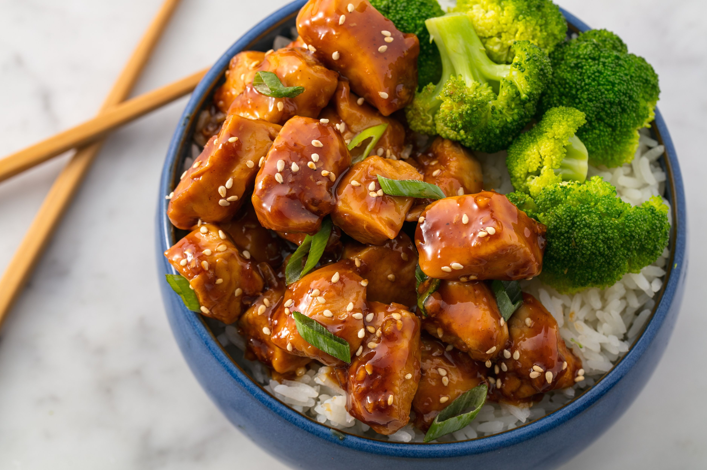

Ramen de Pollo
Tiempo:50 minutos
Dificultad:Alta
Ingredientes
- Fideos de ramen
- Muslos de pollo
- Caldo de pollo
- Huevos
- Cebollín
- Ajo
- Ginger fresco
- Salsa de soja
- Chiles rojos (opcional)
Pasos
- Cocer los fideos de ramen según las instrucciones del paquete.
- En una sartén, dorar los muslos de pollo con ajo y jengibre.
- Agregar el caldo de pollo y la salsa de soja, cocinar por 30 minutos.
- Cocer los huevos en agua hirviendo por 7 minutos para que queden medios cocidos.
- Servir los fideos en un tazón, verter el caldo caliente y agregar el pollo desmenuzado, huevo, cebollín y chiles.